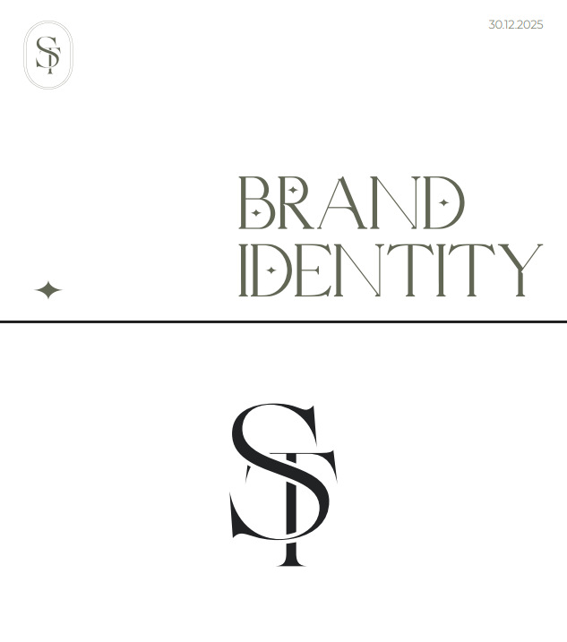
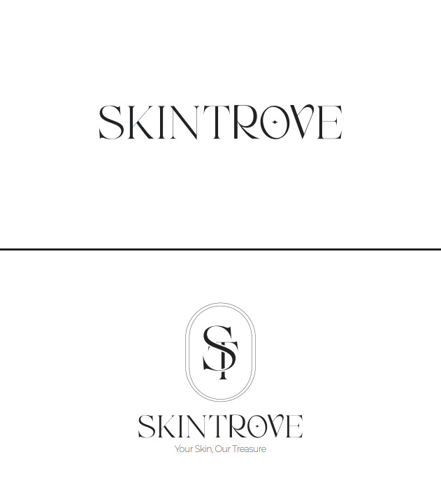
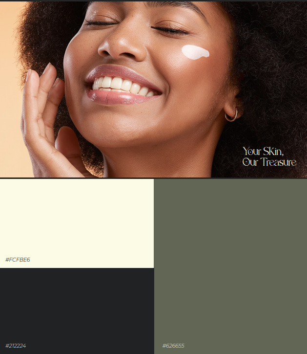
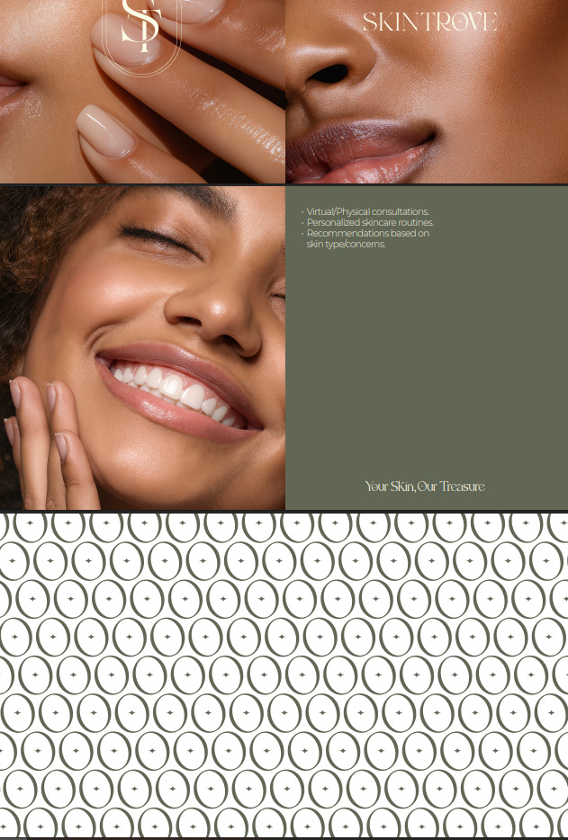
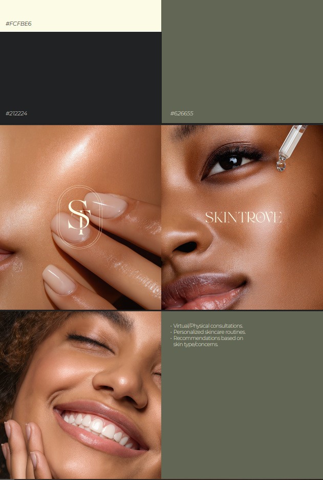
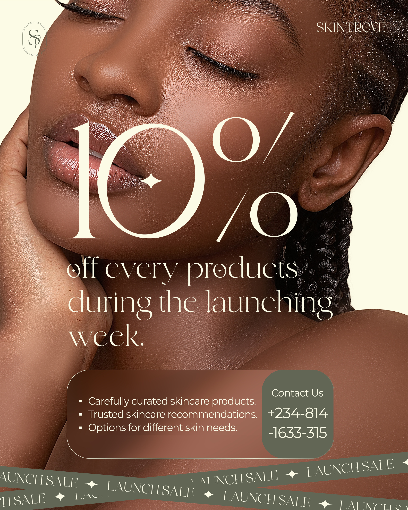
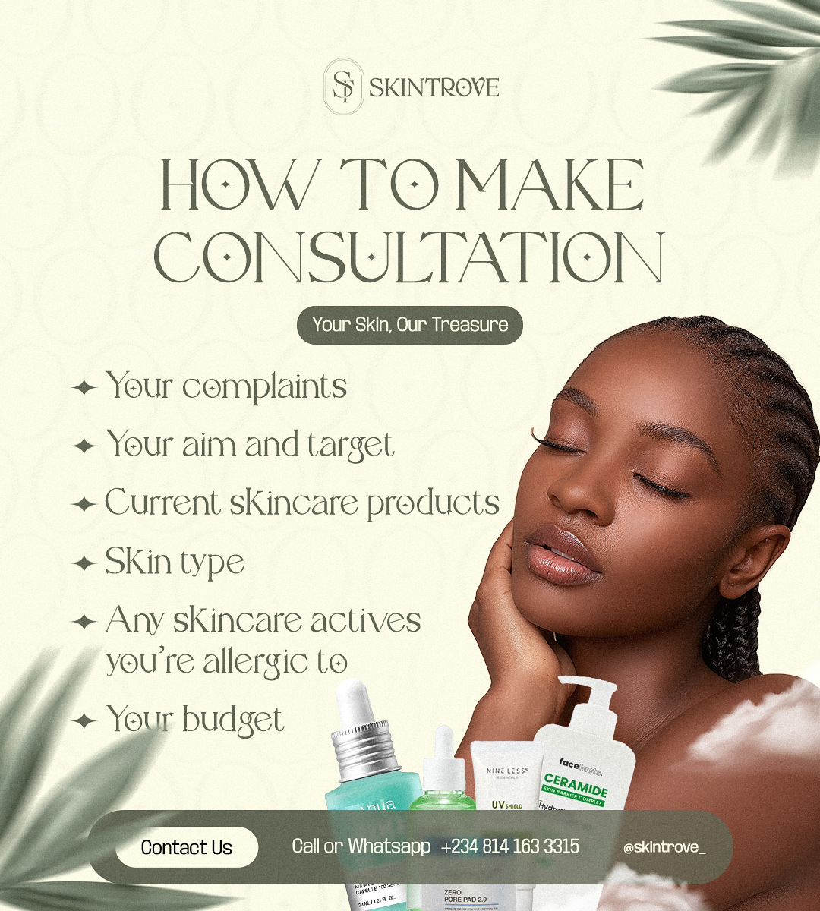

A monogram that interlocks
Two separated letters would have been simpler and more forgettable. Sharing a stem makes the mark a single form, which is what lets it work as a small seal on packaging.
Identity and launch campaign for a skincare brand curating and recommending products for individual skin needs.
Skincare is a category where the identity has to do two jobs at once: read as clinical enough to be trusted with a recommendation, and warm enough that someone will hand over a photograph of their face. The system leans on typography and restraint rather than on the usual pastel softness.
Curation businesses have a credibility problem. They don't manufacture anything, so the brand is the entire product — it has to look like considered judgment rather than resale.
The audience is largely Nigerian, and skincare marketing there is dominated by imagery and claims that don't reflect the actual customer.
An interlocking ST monogram where the T's stem doubles as the S's spine, set inside a rounded frame. It reads as a seal — the visual grammar of certification — without a literal badge.
Cream, charcoal and sage, with a four-point sparkle carried through the wordmark, the pattern and the campaign layouts. Art direction uses dark skin as the default rather than the exception.
Two separated letters would have been simpler and more forgettable. Sharing a stem makes the mark a single form, which is what lets it work as a small seal on packaging.
The category defaults to pink and pale blue. A muted sage against cream reads closer to clinical and further from cosmetic — which suits a brand whose product is advice.
One motif appears in the wordmark's O, the pattern, the bullet points and the campaign headlines. It ties the system together at a level below the logo, so material is recognisable without it.







